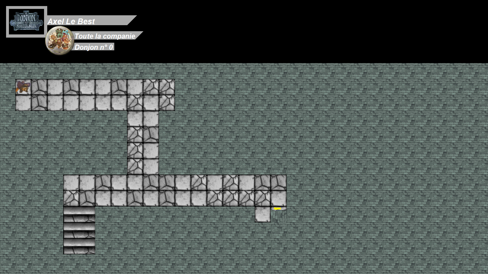
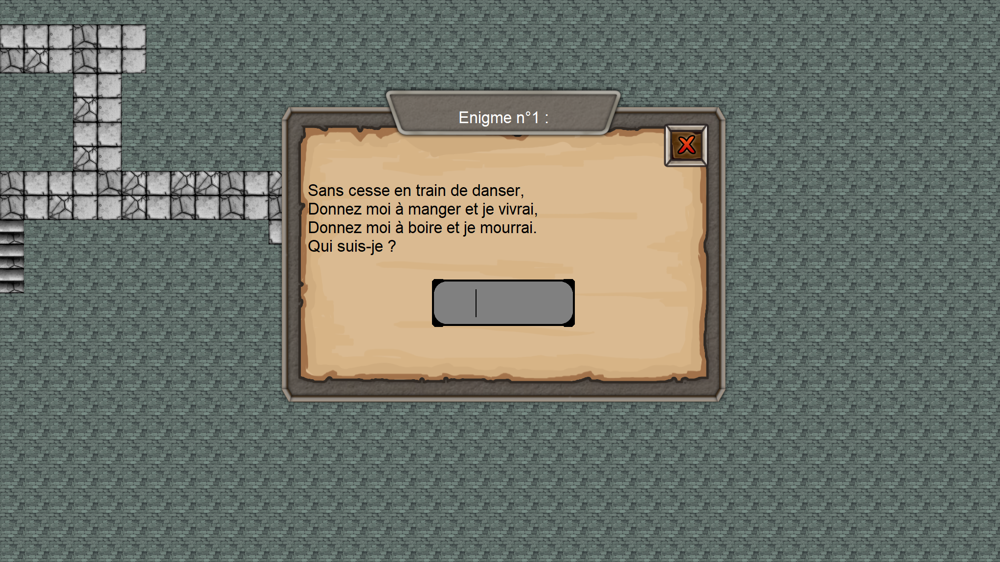
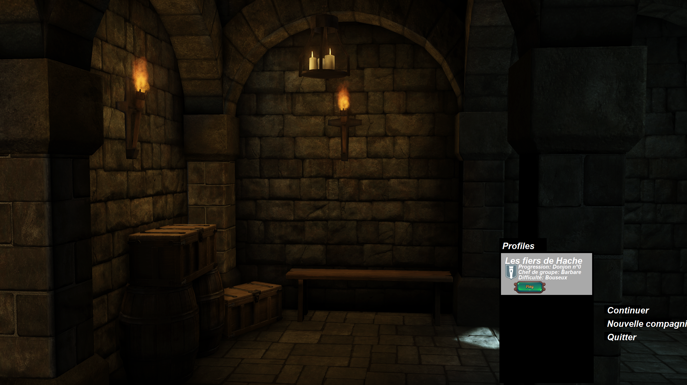
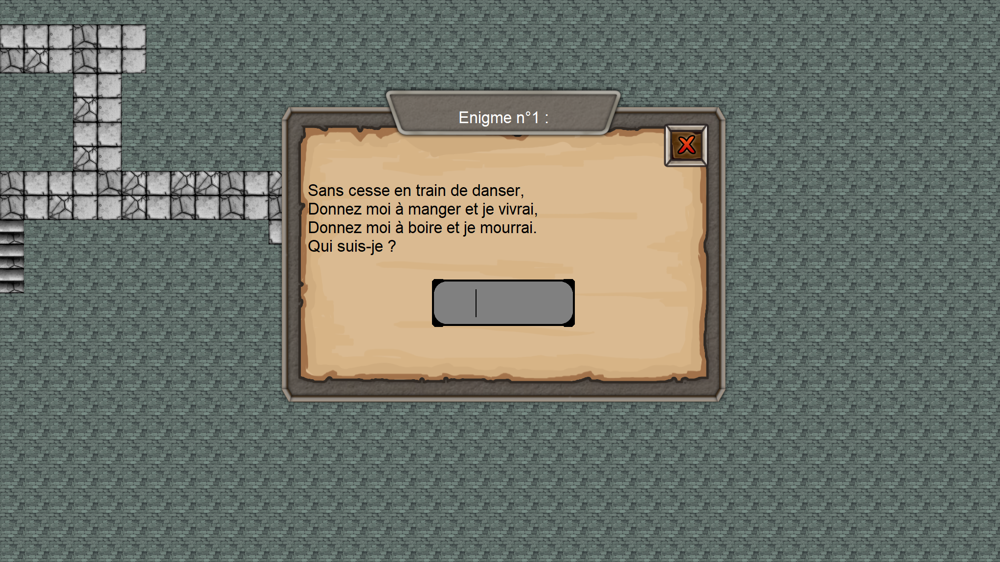

Le jeu prend la forme d'un top down, et utilise la technologie de Pathfinding pour le déplacement des personnages.
Comme un jeu de rôle basique, le joueur devra avancer dans l'histoire, en tuant des ennemis BASTON
Résoudre des énigmes (en utilisant la ruse)

Et principalement essayer de ne pas mourir (il vaut mieux éviter de compter sur les compétences en chirurgie de l'Elfe...)
Détails
Donjon de Naheulbeuk
Ce jeu est un fan game, inpiré de l'univers crée par John Lang dans sa saga Le donjon de Naheulbeuk
Description
Il prend la forme d'un jeu de rôle, où le joueur incarne la célèbre compagnie des Fiers de haches; dans un donjon.

Menu du jeu
Le jeu prend la forme d'un top down, et utilise la technologie de Pathfinding pour le déplacement des personnages.
Comme un jeu de rôle basique, le joueur devra avancer dans l'histoire, en tuant des ennemis BASTON
Résoudre des énigmes (en utilisant la ruse)

Et principalement essayer de ne pas mourir (il vaut mieux éviter de compter sur les compétences en chirurgie de l'Elfe...)
Informations
Statut : En développement
Language utilisé : Python 
Modules : Tkinter | Pathfinding | Playsound | PIL